Neural Floorplan
Github
Raster floorplan → semantic segmentation + wall graph inference → editable CAD-like SVG / JSON
Deep Learning · Semantic Segmentation · Graph Prediction · CAD Automation
Stack:
Python 3.11 · PyTorch · HuggingFace Transformers (SegFormer)
Raster-to-Graph (Hu et al., 2024) · OpenCV · Shapely · pytest · ruff
Overview
Architectural drawings exist in two fundamentally different forms. Vector formats
(DWG, SVG, IFC) encode walls, doors, and rooms as typed geometry—queryable,
editable, machine-readable. Raster formats (scanned blueprints, photo-captured sketches,
rendered PNGs) are just pixels, stripped of semantic identity. The raster form is far
more common in practice: older documents were never digitized properly, architects sketch
on paper, and real-world handoffs often produce images rather than source files.
This project converts raster floorplans into editable architectural vector components.
The current pipeline produces walls, windows, doors, and associated geometry,
exported as final_vector.svg and final_vector.json.
The hard problem is not pixel classification—it is spatial reconstruction.
Recovering wall topology (which wall segments connect at which junctions), hosting doors
and windows on the right wall segments, and generating clean geometry from noisy pixel
evidence turned out to be the real bottleneck. The current pipeline addresses this by
splitting the work between two models: a semantic segmentation model that identifies
what each pixel represents, and a pretrained graph-prediction model that recovers wall
topology directly. The pipeline then merges their outputs into final vector geometry.
Input Data
Dataset — CubiCasa5K
The primary dataset is
CubiCasa5K,
a collection of approximately 5,000 residential floor plan images paired with SVG vector
annotations. Each SVG encodes walls, openings (doors/windows), room polygons, and icons
as typed geometry. The
high_quality_architectural subset was used throughout.
Data-quality strategy
The original raster images in CubiCasa5K are scraped from real estate listings. They are
often misaligned with the SVG annotations, inconsistently scaled, or visually noisy.
Using them directly as training inputs introduces label noise. The training set was
therefore built from two sources:
(a) Clean-subset rasters. A hand-selected subset of originals where visual content
is clearly aligned with the SVG annotation.
(b) SVG-rasterized images. For the rest, the raster is generated by rendering the
SVG directly onto a white background as model_clean.png. Because both the
raster and the mask originate from the same SVG source, their alignment is exact by
construction. This clean render also serves as the wall graph inference input.
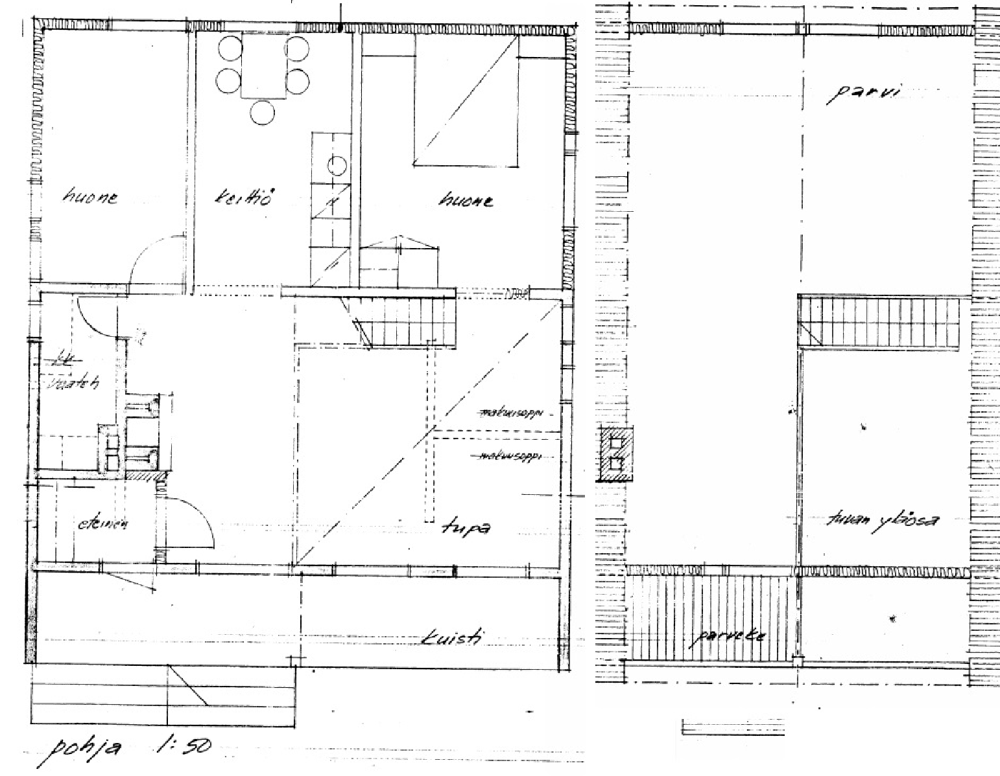
Original raster (CubiCasa5K)
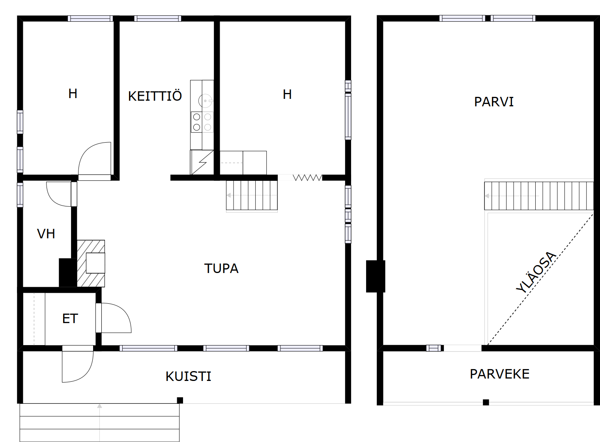
SVG-rendered clean raster (model_clean.png)
Two-Model Strategy
The pipeline delegates two distinct problems to two different models. Neither model is
asked to produce final vector output on its own.
SegFormer — Semantic Evidence
A 7-class segmentation model trained on CubiCasa5K. It identifies what each pixel
represents: wall, floor, background, and three door sub-classes (arc, leaf, origin)
and window. This evidence is used to locate openings, infer scale, and determine
door swing direction.
Output: per-pixel semantic labels on the preprocessed canvas
7-class semantic prediction
Raster-to-Graph — Wall Topology
A pretrained autoregressive graph-prediction model. Given the clean rasterized
floorplan as input, it predicts wall junction nodes and orthogonal wall segment
edges directly—without requiring hand-written rules for detecting wall lines
or junctions from pixels.
Output: wall graph nodes and edges on the same canvas
Both models run on the same preprocessed 512 × 512 canvas so their coordinate
spaces are identical. The vectorization stage then merges them: it uses the wall graph
for topology, uses the segmentation for door and window locations, snaps opening endpoints
onto wall edges, trims the wall centerlines at opening gaps, and buffers the remaining
wall chains into filled polygons.
Full pipeline
-
CubiCasa5K floorplan
SVG-rendered clean raster (
model_clean.png)
-
Shared preprocessing
Crop to content bounding box → add true 20 % white margin → scale long edge to 512 px → center on white 512 × 512 canvas
-
SegFormer segmentation
Predicts 7 semantic classes on the preprocessed canvas: background, floor, wall, window, door_arc, door_leaf, door_origin
-
Raster-to-Graph inference
Autoregressive wall graph prediction; produces wall junction nodes and orthogonal wall segment edges
-
Orthogonal graph alignment
Cluster near-equal x/y axes, snap edges to horizontal or vertical, split crossings into junction nodes, merge collinear overlapping edges
-
Scale inference
Estimate pixel-to-mm from red door_arc bounding boxes; 700 mm and 900 mm door module candidates
-
Door and window localization
Detect connected components in the segmentation output; infer opening endpoints from bounding boxes and red-pixel side evidence
-
Snap openings to wall graph
Host each opening’s two endpoints onto one compatible wall edge; reject candidates that cannot be hosted on the same edge
-
Trim wall graph at openings
Insert opening nodes into the wall graph and remove the centerline interval inside each hosted opening
-
Buffer connected wall chains
Connect trimmed centerlines into chains; buffer the connected line system into filled wall polygons (200 mm target thickness when scale is resolved)
-
Export SVG / JSON
final_vector.svg with walls, windows, door primitives; final_vector.json with typed geometry and component metadata
SegFormer Training
From 5 classes to 7 classes
The initial segmentation model used 5 classes: background, wall, opening (doors and windows
combined), room, and icon. This was not sufficient for vectorization because doors and
windows were indistinguishable, and no explicit evidence of door swing or hinge location
was available.
The class scheme was redesigned to separate door geometry into three specific sub-classes.
The current 7-class scheme and why each class matters:
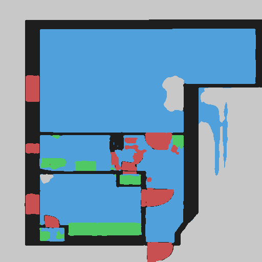
5-class mask (background, wall, opening, room, icon)
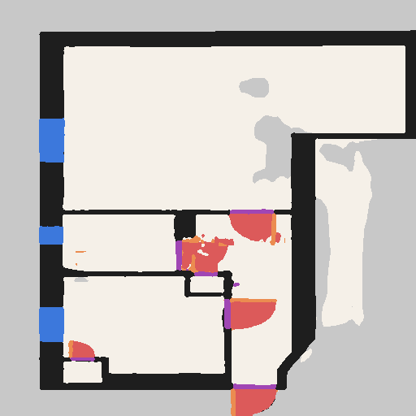
7-class mask (current — run3)
7 classes and their role
0 — background context
1 — floor separates from wall
2 — wall pixel evidence
3 — window opening, no swing
4 — door_arc swing, scale cue
5 — door_leaf open panel, hinge
6 — door_origin hinge/threshold
Data augmentation
Sketch-style augmentation is applied offline before training. Each spatial transform is
applied identically to the input image and all mask files to preserve pixel-level
alignment. Pixel-level variations (blur, brightness) apply to the image only.
Augmentation pipeline
horizontal flip (50 % prob) — floor plans are equally valid mirrored
vertical flip (50 % prob) — same rationale
90° rotation (k ∈ {0,1,2,3}) — plans at any cardinal orientation
translation ±10 px — imprecise scan simulation
Gaussian blur r ∈ [0.3, 1.0] — scan softness, low-resolution input
brightness × [0.85, 1.15] — exposure variation
Model architecture — SegFormer-B0 + FloorplanDecoder
SegFormer-B0
(
nvidia/mit-b0) is used as a frozen backbone. Its hierarchical Mix
Transformer encoder produces multi-scale feature maps at 1/4, 1/8, 1/16, and 1/32
of the input. Because the backbone is frozen, features are extracted once per image
and cached to disk—training runs only the custom decoder head.
A custom FloorplanDecoder fuses the four feature maps, refines with two
convolutional layers, and upsamples to a 512 × 512 output with 7 class logits.
FloorplanDecoder layers (verified from models.py)
IN Backbone hidden states: 4 tensors, ch [32, 64, 160, 256]
→ 1×1 Conv per stage → 256 ch each
→ Upsample all to H/4 × W/4, element-wise sum
→ Conv 3×3 → 256 ch · BN · GELU · Dropout(0.1)
→ Conv 3×3 → 128 ch · BN · GELU · Dropout(0.1)
→ 1×1 Conv → 7 classes (logits)
OUT Bilinear upsample → [B, 7, 512, 512]
Training configuration (active run: segformer_b0_run3)
| Variant | SegFormer-B0 (nvidia/mit-b0), frozen backbone |
| Input size | 512 × 512 px |
| Classes | 7 — background, floor, wall, window, door_arc, door_leaf, door_origin |
| Loss | CrossEntropy |
| Optimizer | AdamW · lr = 6×10−5 · weight decay 0.01 |
| Schedule | CosineAnnealingLR · 50 epochs · batch 4 |
| Mixed precision | enabled (torch.amp) |
| Checkpointing | best val mIoU + latest each epoch |
Segmentation training results — 7-class (run3, epoch 50)
Preview images from run3 epoch 50. Each row: input raster, ground-truth target, 7-class prediction, overlay.
Sample A — run3 epoch 50, 7-class
Sample B — run3 epoch 50, 7-class
Raster-to-Graph
Semantic segmentation identifies what each pixel represents, but it does not directly
give wall topology. The early vectorization attempts tried to extract wall line segments
and junctions directly from segmentation masks using computer vision rules. This was
consistently unstable: missing pixels broke junctions, orthogonal alignment was fragile,
and wall connectivity errors propagated throughout the output.
The current pipeline instead uses
Raster-to-Graph
(Hu et al., 2024), a pretrained autoregressive model that predicts floorplan wall topology
directly as a graph: nodes are wall endpoints and junctions; edges are orthogonal wall
segments. The project uses the official pretrained checkpoint with locally adapted
preprocessing and inference settings to improve graph production rate on CubiCasa renders.
Preprocessing — crop512_margin20_truepad
Input preparation
detect dark content bounding box in model_clean.png
crop exactly to content bbox
create new white image with 20 % padding on each side (true padding)
scale padded image so long edge = 512 px
center on 512 × 512 white canvas
normalize with original Raster-to-Graph mean / std
Inference settings
Raster-to-Graph settings (current settled)
first_step_threshold
0.02
allows graph to start from lower-confidence candidates
later_step_threshold
0.02
keeps more candidate continuations during autoregressive decoding
edge_search_threshold
50 px
search radius for connecting candidate graph edges
monte_times
4
repeated generation attempts per connected component
max_candidates_per_step
40
cap on candidate branches considered at each generation step
max_new_starts
2
mask-and-rerun recovery starts for missed wall regions
angle hard filter
±10°
removes edges outside near-horizontal / near-vertical; enforces the floorplan orthogonality assumption
Vectorization
The vectorization stage takes the wall graph from Raster-to-Graph and the semantic
prediction from SegFormer and merges them into final CAD-like geometry. Before explaining
the steps, it helps to understand the semantic primitives used to represent doors and
windows in the 7-class segmentation output.
Door and window semantic primitives
Pipeline debug overlay (same primitives in context)
The four color-coded classes used in vectorization:
door_arc (red)—the swing arc of an open door, used for scale inference and swing-side detection;
door_leaf (orange)—the open door panel, used to identify the hinge endpoint;
door_origin (purple)—the threshold/hinge edge where the door attaches to the wall;
window (blue)—a wall opening with no swing geometry.
Graph Alignment
The raw Raster-to-Graph output contains edges that are nearly but not exactly
horizontal or vertical. The alignment stage clusters near-equal x and y axis values
across all edge endpoints, snaps each edge to its dominant axis, then splits edges at
horizontal–vertical crossings to insert true junction nodes. Collinear overlapping
segments are merged. Edges outside ±10° of horizontal or vertical are rejected.
All downstream stages work on this aligned graph.
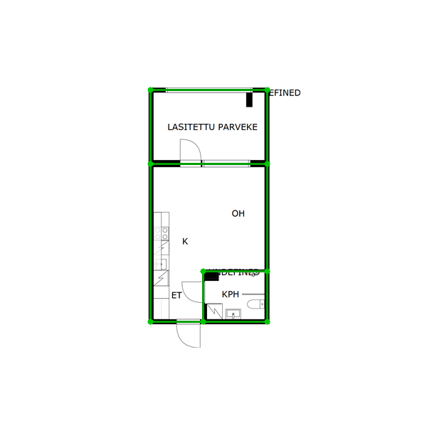
Orthogonally aligned graph
Opening Hosting and the Same-Edge Constraint
Doors are located from red door_arc components; windows from blue window components.
Each candidate has two endpoints (a hinge and an end for doors, or window extents for
windows). A strict constraint applies: both endpoints of one opening must attach
to the same wall segment. If they were allowed to snap to two different,
disconnected wall fragments, the opening would jump across parts of the plan that are
not physically adjacent—producing spatially incorrect geometry.
Door swing direction is inferred by counting red door_arc pixels on each signed side
of the hosting edge. Orange door_leaf pixels identify the hinge endpoint when available.
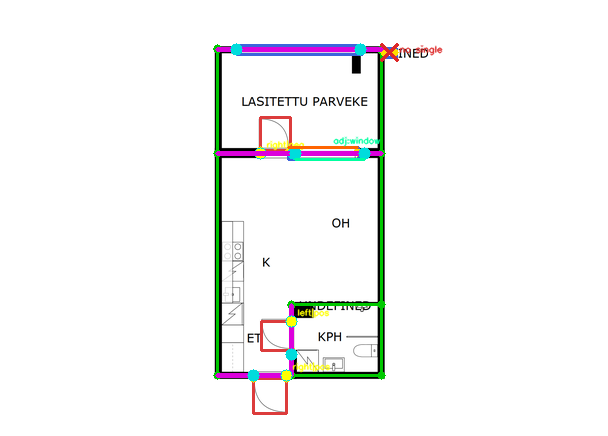
Door/window hosting debug overlay
Wall Trimming and Buffering
After hosting, opening intervals are inserted into the wall graph and the centerline
segment inside each gap is removed. The remaining wall centerline segments are then
connected into continuous chains. Buffering runs on the connected chain system rather
than on individual segments—this ensures corners and T-junctions render as clean
joins rather than overlapping capped rectangles. Wall thickness targets 200 mm when
scale is resolved from door evidence.
thin centerline graph → trim at openings → buffer connected chains → filled wall polygon
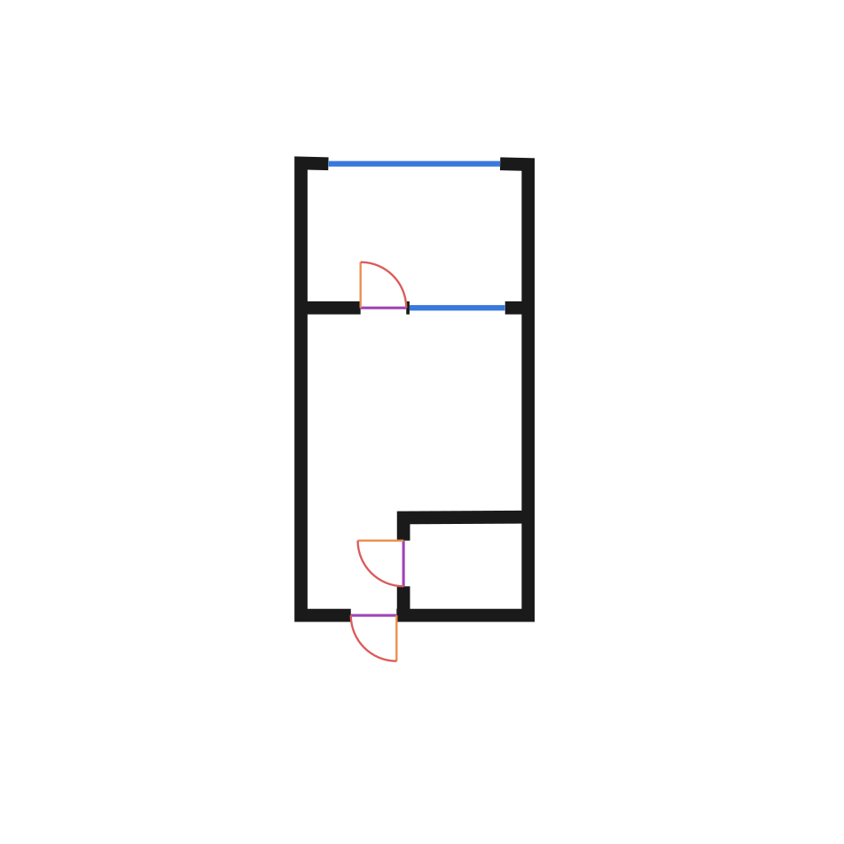
Final vector output
Pipeline Samples
Full pipeline process grids for three CubiCasa5K plans. Each shows all eight stages
from original floorplan to final vector output.
Sample 01 — simple plan, best current result
Original
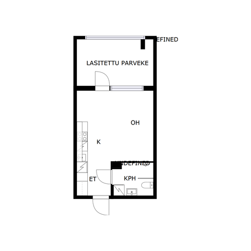
Preprocessed input
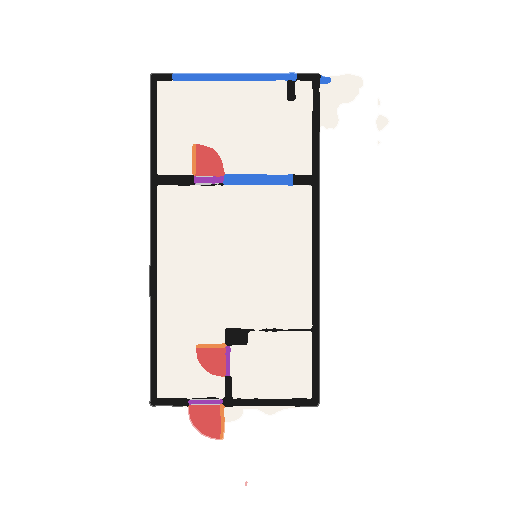
7-class segmentation
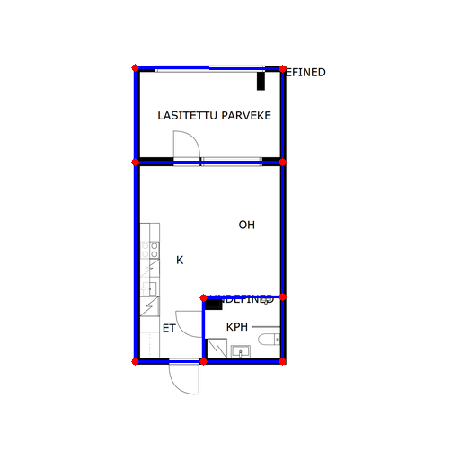
Graph overlay
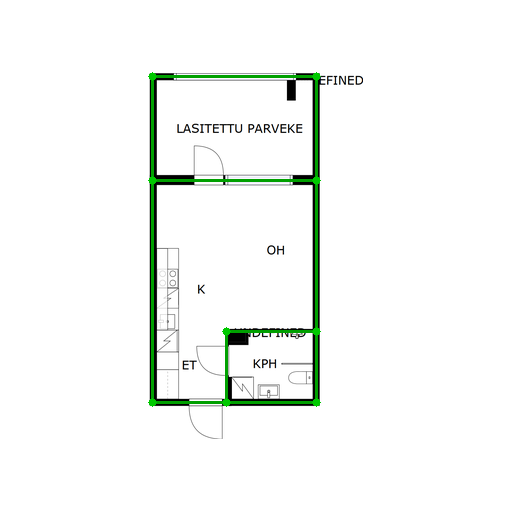
Aligned graph
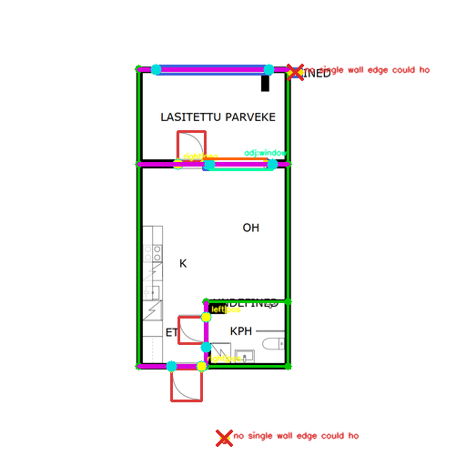
Debug overlay
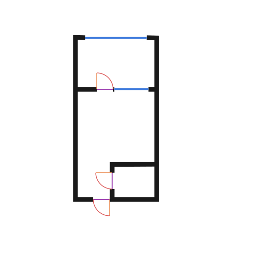
Final vector
Sample 02 — more complex plan
Preprocessed input
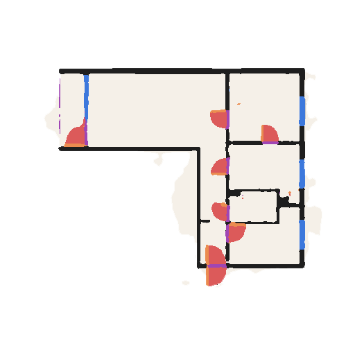
7-class segmentation
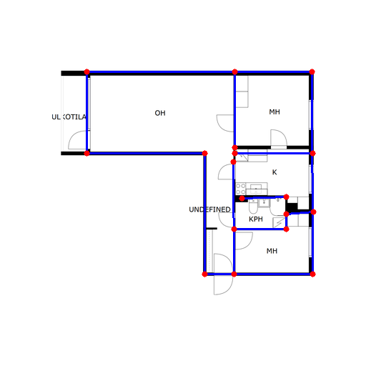
Graph overlay
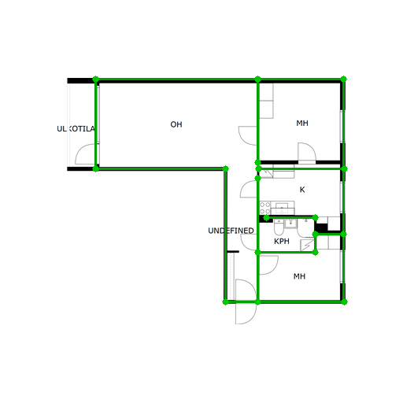
Aligned graph
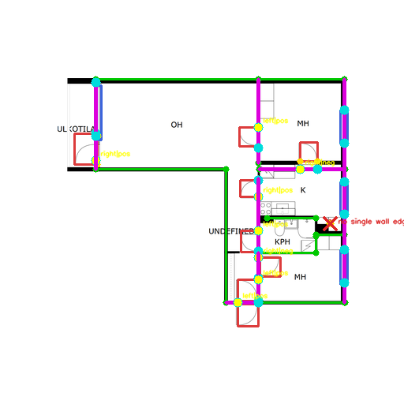
Debug overlay
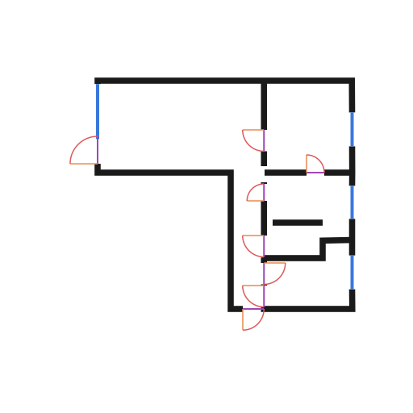
Final vector
Sample 03 — more complex plan
Preprocessed input
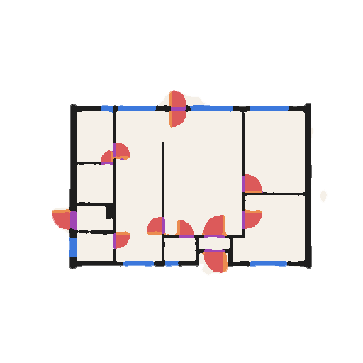
7-class segmentation
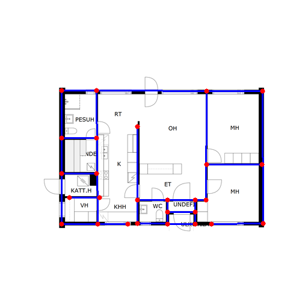
Graph overlay
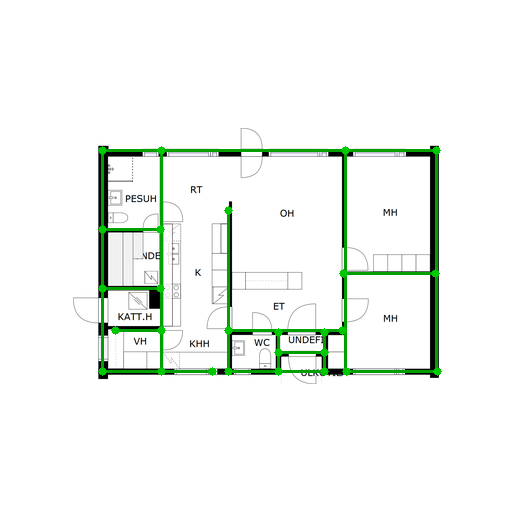
Aligned graph
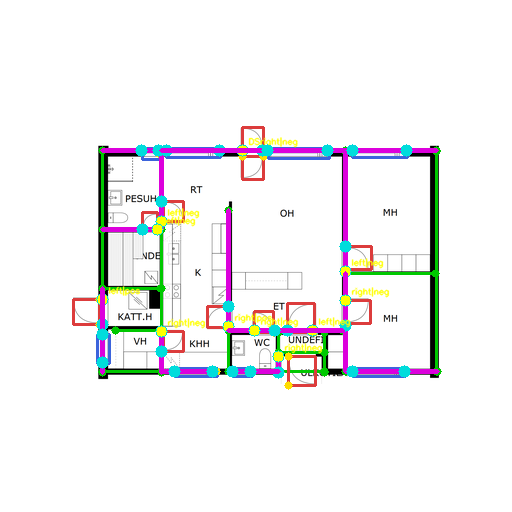
Debug overlay
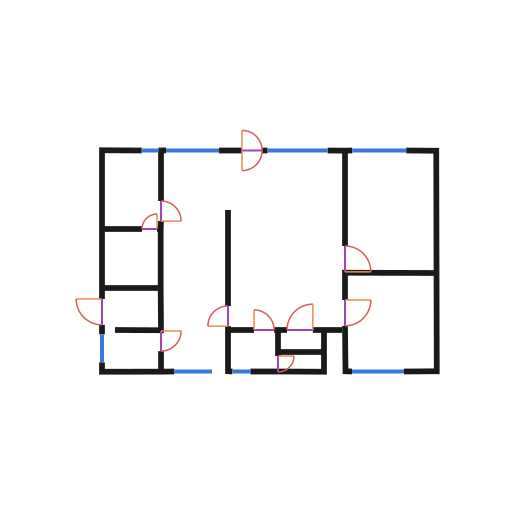
Final vector
Development Phases
The vectorization approach went through four phases. Each phase solved one bottleneck
and surfaced the next. Phases 1–3 were necessary iterations; Phase 4 is the current method.
Phase 1
5-class segmentation (background, wall, opening, room, icon) → direct pixel-to-line
conversion. Doors and windows shared one class with no swing or hinge evidence.
Failed: opening type was indistinguishable; vector accuracy was extremely low.
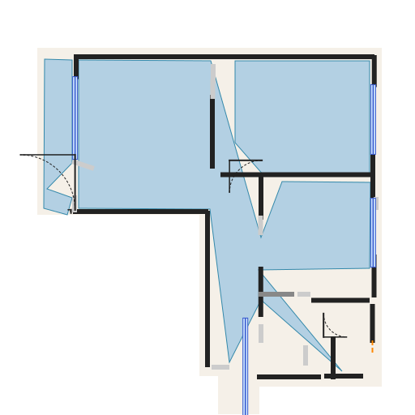
Phase 1 output
Phase 2
7-class segmentation added window, door_arc, door_leaf, door_origin → richer
semantic evidence. Direct pixel-to-vector conversion continued.
Failed: better semantic evidence did not fix wall topology; direct raster
conversion remained unstable.
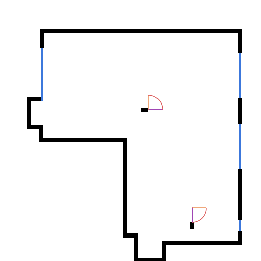
Phase 2 output
Phase 3
7-class segmentation → architectural keypoint detection → point-based graph
construction. Introduced axis alignment, door bbox anchors, and debug metrics.
Failed: point recognition accuracy demands were too high; missing keypoints
caused graph construction to collapse.
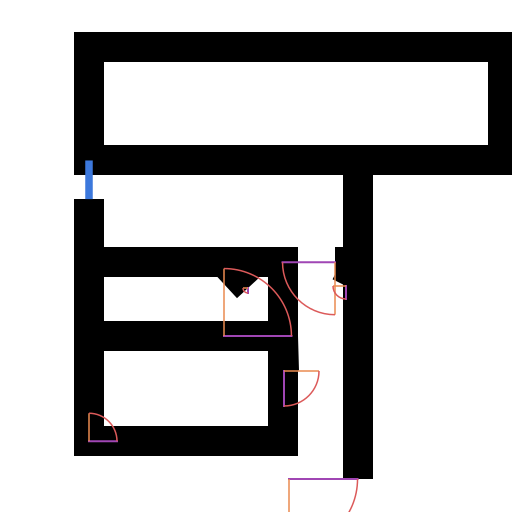
Phase 3 output
Phase 4 — Hybrid Graph + Semantic Vectorization Current
Phase 4 replaces hand-written keypoint detection with a pretrained graph-prediction
model. Raster-to-Graph predicts wall topology directly—nodes are wall endpoints and
junctions, edges are orthogonal wall segments. The 7-class segmentation runs in parallel
on the same preprocessed canvas. Opening points are snapped onto the predicted wall graph
edges, wall intervals are trimmed at each hosted opening, and the connected wall chains
are buffered into filled wall polygons for SVG/JSON export.
Status: the pipeline is implemented and generating workable output for simple
to moderately complex plans. This is the current active project state.
Current Limitations
The pipeline is a working research prototype. Vector outputs are workable but not perfect,
and the project does not claim production-readiness:
- Complex plans with many rooms or unusual wall configurations can still produce
incomplete or disconnected wall graphs.
- Door and window localization depends on segmentation quality; incorrect or missing
semantic predictions lead to unhosted or misplaced openings.
- Scale inference relies on door_arc evidence and may be unavailable in plans
without clear red arc components in the segmentation output.
- The Raster-to-Graph checkpoint was pretrained on a different floorplan style;
some samples remain outside its effective distribution despite preprocessing
and threshold adaptation.
Future work includes potential fine-tuning of the wall graph model on CubiCasa renders
and further improvements to opening hosting robustness for complex plans.
Technical Stack
| Language | Python 3.11 |
| Deep learning | PyTorch (mixed-precision via torch.amp) |
| Segmentation | HuggingFace Transformers — SegFormer-B0 (nvidia/mit-b0) |
| Wall graph | Raster-to-Graph pretrained checkpoint (Hu et al., 2024) |
| Raster processing | OpenCV, Pillow |
| Vector geometry | Shapely (chains, buffering, topology) |
| Testing / lint | pytest · ruff |
| Environment | conda floorplan-cad |
References
-
CubiCasa5K
Kalervo, A., Ylioinas, J., Häikiö, M., Karhu, A., and Kannala, J.
CubiCasa5K: A Dataset and an Improved Multi-Task Model for Floorplan Image Analysis.
SCIA, 2019.
github.com/cubicasa/cubicasa5k
-
SegFormer
Xie, E., Wang, W., Yu, Z., Anandkumar, A., Alvarez, J. M., and Luo, P.
SegFormer: Simple and Efficient Design for Semantic Segmentation with Transformers.
NeurIPS, 2021.
transformers/model_doc/segformer
·
arXiv:2105.15203
-
Raster-to-Graph
Hu, S., Wu, W., Su, R., Hou, W., Zheng, L., and Xu, B.
Raster-to-Graph: Floorplan Recognition via Autoregressive Graph Prediction with an
Attention Transformer. Computer Graphics Forum, 43(2), e15007, 2024.
doi:10.1111/cgf.15007
·
github.com/SizheHu/Raster-to-Graph
(GPL-3.0)
Adapted code and pretrained checkpoint used under GPL-3.0; upstream attribution preserved in the project repository.